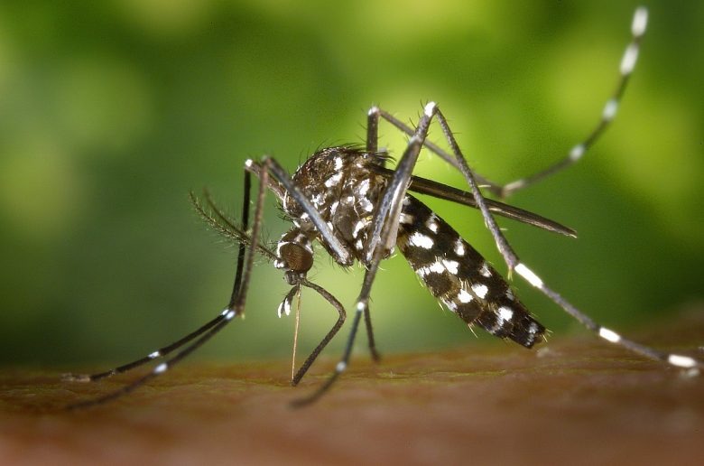
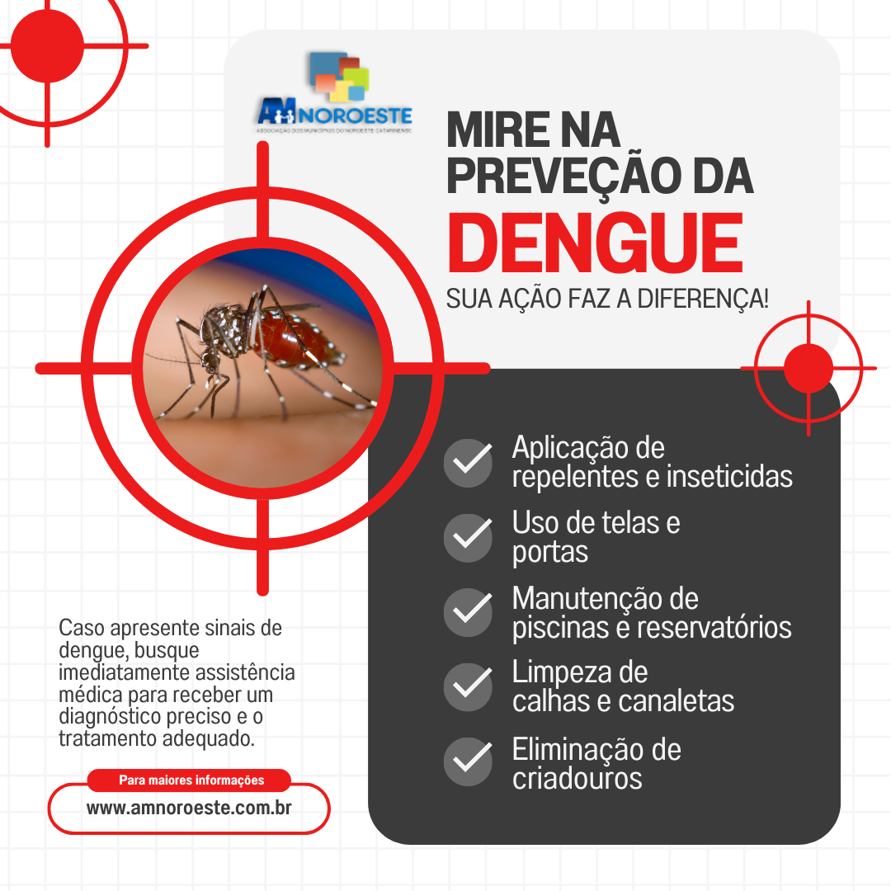
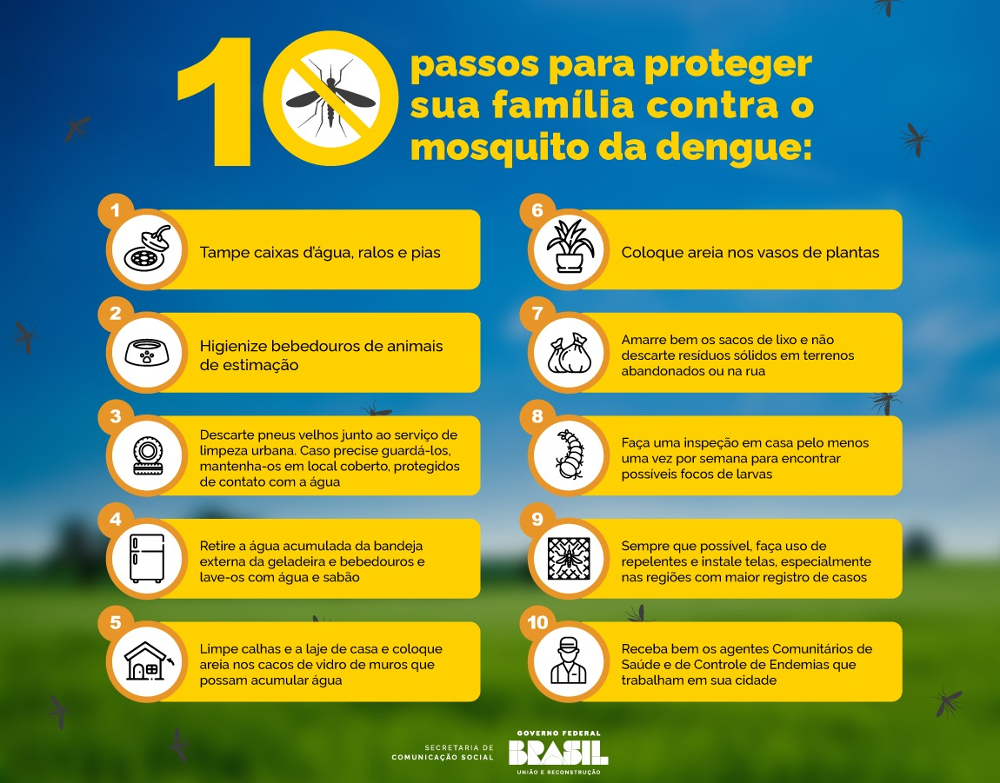

1. Compreendendo a Dengue:
A dengue é uma doença séria e potencialmente fatal, mas pode ser controlada e prevenida com medidas adequadas de saúde pública e conscientização. A colaboração entre governos, comunidades e indivíduos é crucial para reduzir a incidência e o impacto da dengue.
.jpg)
2. Estratégias de Prevenção da Dengue:
A prevenção da dengue envolve:
1. Controle do Mosquito Vetor:
- Eliminação de criadouros (remoção de água parada).
- Uso de inseticidas (pulverização espacial e focal).
2. Proteção Individual:
- Uso de repelentes.
- Vestimentas adequadas (roupas de manga longa e calças compridas).
3. Barreiras Físicas:
- Instalação de telas em portas e janelas.
- Uso de mosquiteiros tratados com inseticida.
4. Educação e Conscientização:
- Campanhas informativas para a população sobre a importância das medidas preventivas.

3. Diagnóstico e Tratamento da Dengue:
### Diagnóstico da Dengue
1. Sinais Clínicos:
- Febre alta, dor de cabeça, dor atrás dos olhos, dores musculares e articulares, náusea, vômito, erupção cutânea e sangramentos leves.
2. Exames Laboratoriais:
- **Sorologia**: Detecta anticorpos contra o vírus.
- **PCR**: Detecta o RNA viral.
- **Hemograma**: Verifica alterações nas células sanguíneas.
Tratamento da Dengue
1. Hidratação:
- Oral ou intravenosa, essencial para evitar complicações.
2. Controle de Sintomas
- Uso de paracetamol para febre e dores (evitar aspirina e AINEs).
3. Observação Médica:
- Monitoramento de sinais de complicações.
4. Tratamento de Complicações:
- Hospitalização e suporte intensivo em casos graves..
.jpg)
4. Impacto Social e Econômico da Dengue:
Impacto Social e Econômico da Dengue
1. Impacto Social:
- Saúde Pública : Alta incidência de casos sobrecarrega o sistema de saúde, reduzindo a capacidade de atendimento para outras doenças.
- **Qualidade de Vida**: Doentes enfrentam dor intensa e incapacidade temporária, afetando a rotina e produtividade.
- **Educação**: Crianças e adolescentes faltam à escola, prejudicando o aprendizado.
2. Impacto Econômico:
- Custos Médicos: Aumento nos gastos com hospitalizações, medicamentos e tratamentos preventivos.
- Perda de Produtividade: Ausência no trabalho devido à doença, resultando em perdas econômicas para trabalhadores e empregadores.
- Campanhas de Prevenção : Investimentos públicos em campanhas de conscientização e controle do mosquito vetor.
A dengue tem um impacto significativo, exigindo esforços conjuntos de governos, comunidades e indivíduos para mitigação..

5. Engajamento Comunitário na Prevenção da Dengue:
Engajamento Comunitário na Prevenção da Dengue
1. Educação e Conscientização:
- Campanhas informativas para ensinar a população sobre a importância de eliminar criadouros de mosquitos.
- Programas educativos em escolas e comunidades.
2. Participação Ativa da Comunidade:
- Mobilização para limpar e remover recipientes que acumulam água.
- Mutirões de limpeza em bairros e áreas públicas.
3. Colaboração com Autoridades de Saúde:
- Trabalhar em conjunto com serviços de saúde para monitorar e controlar a disseminação do mosquito.
- Reportar casos suspeitos de dengue e focos de mosquitos.
4. Iniciativas Locais:
- Grupos comunitários organizando ações regulares de prevenção.
- Uso de redes sociais e outros meios para divulgar informações e coordenar esforços.
O engajamento comunitário é essencial para o sucesso das estratégias de prevenção da dengue, promovendo uma abordagem colaborativa e sustentável..
.jpg)
6. Pesquisa e Inovação no Combate à Dengue:
Pesquisa e Inovação no Combate à Dengue
1. Desenvolvimento de Vacinas:
- Vacinas como a Dengvaxia foram desenvolvidas, e novas vacinas estão em fase de pesquisa para maior eficácia e segurança.
2. Tecnologias de Controle de Mosquitos:
- Mosquitos geneticamente modificados para reduzir a população de Aedes aegypti.
- Liberação de mosquitos infectados com a bactéria Wolbachia, que reduz a capacidade de transmissão do vírus.
3. Diagnóstico e Monitoramento:
- Testes rápidos e mais precisos para a detecção do vírus da dengue.
- Sistemas de monitoramento e previsão de surtos usando dados epidemiológicos e climáticos.
4. Tratamentos Inovadores:
- Pesquisa em antivirais específicos contra o vírus da dengue.
- Terapias de suporte aprimoradas para casos graves.
A pesquisa e a inovação são cruciais para desenvolver novas ferramentas e estratégias no combate à dengue, complementando as medidas tradicionais de prevenção e controle..